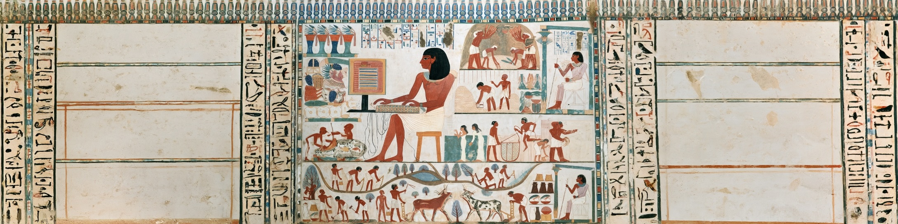

Programmiersprachen

There are only two kinds of programming languages: the ones people complain about and the ones nobody uses.
— Doug Larmour
Was ist eine Programmiersprache?
Für den Ingenieur ist die Programmiersprache das Verbindungsglied zwischen menschlicher Problemformulierung und maschineller Ausführung. Die formale Natur der Sprache (mit festgelegtem Zeichensatz, Syntax und Semantik) stellt sicher, dass ein Computer eine Anweisung eindeutig interpretieren kann; Mehrdeutigkeiten, die in natürlicher Sprache selbstverständlich sind, führen in einer Programmiersprache zu Fehlern. Wir verwenden Programmiersprachen nicht nur, um Berechnungen zu automatisieren, sondern auch um Prozesse zu modellieren, Messdaten auszuwerten und Entscheidungslogik zu formalisieren. Das sind Aufgaben, die im Bauingenieurwesen zunehmend an Bedeutung gewinnen.
Stack Overflow Developer Survey 2026, meistgenutzte Sprachen (Top 21)
Zeichensatz einer Programmiersprache
Der Zeichensatz legt fest, welche Zeichen in einem Programm vorkommen dürfen. Alles, was nicht zum Zeichensatz gehört, ist ein Fehler, noch bevor die Syntax geprüft wird.
Python-Quelltext ist standardmäßig UTF-8-kodiert.
| Zeichensatz-Beispiel | Bedeutung |
|---|---|
a–z, A–Z, ä, π |
Buchstaben: Namen von Variablen und Funktionen |
0–9 |
Ziffern: Zahlen und Teile von Namen |
+ - * / = |
Sonderzeichen: Operatoren |
( ) : # " . |
Sonderzeichen: Klammern, Kommentare, Texte |
␣ (Leerzeichen), Zeilenumbruch |
Leerraum: trennt Wörter, Einrückung bildet Code-Blöcke |
Der Zeichensatz ist die unterste Ebene einer Programmiersprache: Er definiert den Vorrat an Zeichen, aus denen ein Programm besteht, also Buchstaben, Ziffern, Sonderzeichen und Leerraum. Python-Quelltext ist standardmäßig UTF-8-kodiert, sodass auch Umlaute und griechische Buchstaben in Namen erlaubt sind. Welche Zeichenfolgen daraus ein gültiges Programm bilden, regelt erst die Syntax.
Syntax einer Programmiersprache
Formaler Regelsatz, der definiert, wie der Computer die Programmiersprache interpretieren soll. Die Syntax umfasst meist Regeln zur Definition von Befehlen (Wörter), Variablen (Werte) und Code-Blöcken (Sätze).
| Syntax-Beispiel | Bedeutung |
|---|---|
1234 |
Zahlenwert |
True / False |
Boolesche Werte |
"Text" |
Zeichenkette |
# Ignoriere |
Kommentar |
+ - / * |
Operatoren |
if True: |
Eine Bedingung wird immer mit einem Doppelpunkt abgeschlossen |
····print("Hello") |
Einrückung eines Code-Blocks: Alle Zeilen eines Blocks müssen gleich eingerückt sein |
Die Syntax legt fest, welche Zeichenfolgen ein gültiges Programm bilden: Zahlen, Wahrheitswerte und Zeichenketten sind einfache Datentypen, Kommentare und Operatoren folgen festen Schreibweisen. Python kennzeichnet Code-Blöcke durch Einrückung; alle Zeilen eines Blocks müssen gleich eingerückt sein, und eine if-Bedingung schließt immer mit einem Doppelpunkt ab.
Semantik einer Programmiersprache
Definition der Bedeutung der Sprachelemente und der zulässigen Kombinationen von Elementen.
| Semantik-Beispiel | Bedeutung |
|---|---|
print("Hello") |
Gibt die Zeichenkette „Hello“ aus |
exit() |
Beendet ein Programm |
pass |
Tut gar nichts |
break |
Bricht einen Code-Block ab |
while |
Wiederhole den folgenden Code-Block |
Die Semantik legt fest, was ein syntaktisch korrektes Programm bedeutet: print("Hello") gibt eine Zeichenkette aus, break bricht einen Code-Block ab und while wiederholt den folgenden Block.
Die Entwicklung der Programmiersprachen
Generationen der Programmiersprachen
1. Generation – Zuerst wurden Computer direkt in binärem Maschinencode programmiert, den ein Prozessor direkt ausführen kann, den aber meist nur ein Prozessortyp versteht.
1101 0000 0000 0111 1011
1011 1111 1110 1000 1010
1101 0010 0000 0111 11112. Generation – Assemblersprachen nutzen Maschinenbefehle (ADD, MOV, …) eines bestimmten Prozessortyps. Eine Übersetzungssoftware (Assembler) übersetzt sie in Maschinencode.
mov al, 2 ; kopiert 2 in Register AL
add al, 3 ; addiert 3 zu AL
hlt ; stoppt den Prozessor3. Generation – Höhere Programmiersprachen sind menschenlesbar und näher an natürlicher Sprache. Ein Compiler oder Interpreter übersetzt den Code in Maschinencode.
while i < 20: # solange i < 20
x = x + i * i # addiere i² zu x
if x > 100: # wird x größer 100,
i = i + 3 # springe in 3er-SchrittenDie Entwicklung der Programmiersprachen spiegelt den wachsenden Anspruch wider, komplexe Probleme mit immer weniger Aufwand in maschinenausführbare Anweisungen zu übersetzen. Maschinencode ist zwar unmittelbar ausführbar, jedoch extrem fehleranfällig und an einen bestimmten Prozessortyp gebunden; schon ein einzelner Bit-Fehler ändert die Programmlogik grundlegend. Assemblersprachen brachten lesbare Kürzel (Mnemonics) und reduzierten damit die Fehlerquote erheblich, blieben aber weiterhin prozessorspezifisch. Mit den höheren Programmiersprachen wie Python, C oder Java löste sich die Programmierung schließlich vollständig von der Hardware ab: Ein Compiler oder Interpreter übernimmt die Übersetzung, sodass derselbe Quellcode auf unterschiedlichen Prozessoren läuft. Diese Abstraktion ist der Grund, warum wir heute in Minuten Programme schreiben können, für die früher Stunden maschinennaher Codierung nötig gewesen wären.
Entwicklung der Programmiersprachen
Durch die Änderungen der Anforderungen an Software entwickeln sich nicht nur die Softwarearchitekturen sondern auch neue Programmiersprachen die an Popularität gewinnen. Dabei verlief die Entwicklung nicht linear: Parallel zu traditionellen Anwendungssprachen wie C++ und Delphi gewannen Serversprachen wie Java und C# sowie Websprachen wie PHP, Perl und JavaScript an Bedeutung. Über die letzten 20 Jahren hat sich in diesem Bereich vor allem JavaScript durchgesetzt, da es Client- und Serverseitig eingesetzt werden kann. Seit 2017 gewinnt vor allem Python massiv an Popularität, da es insbesondere im KI-Bereich eingesetzt wird.
Die Rangfolge lässt sich bis heute fortschreiben. Der PYPL-Index misst, wie häufig weltweit nach Tutorials einer Sprache gesucht wird. Java und PHP führen 2004, Python überholt Java im April 2018 und erreicht im Oktober 2026 rund 54 % der Suchanfragen.
- bis ~1990: Fortran, COBOL, Pascal und C prägen Wissenschaft und Wirtschaft
- ~1990–2000: C/C++ dominieren die Anwendungsentwicklung von PCs
- ~2000–2010: Java führt das Ranking an (Server, Enterprise)
- ~2005–2015: JavaScript steigt mit dem Web-Boom
- ~2017+: Python überholt alle — KI- und Data-Science-Boom
PYPL PopularitY of Programming Language Index, 2004–Oktober 2026 (Google-Suchen nach Tutorials), Top 8 je Quartal
Python und Data Science
Python hat in den letzten Jahren zunehmend an Popularität gewonnen, ist allerdings älter als Java (1995), C# (2000) und JavaScript (1995). Die Popularität ist zum einen darauf zurückzuführen, dass die Sprache sehr auf Lesbarkeit und Einfachheit ausgelegt ist und dadurch sehr leicht zu erlernen ist. Zum anderen gibt es durch ihr Alter heutzutage sehr viele Bibliotheken und für fast jedes Problem eine existierende Lösung. Dadurch ist Python auch sehr vielseitig einsetzbar. Das Interesse an Python und an Data Science wächst seit etwa 2012 nahezu gleichlaufend (Abbildung unten). Der Begriff „Vibe Coding“, also das Programmieren per Prompt mit KI-Assistenten, taucht erst Anfang 2025 in den Suchanfragen auf.
Google Trends weltweit, 2004 – September 2026, je Suchbegriff auf 100 normiert
Python
Python wurde 1991 von Guido van Rossum entworfen und ist auf Lesbarkeit ausgelegt. Die Leitprinzipien der Sprache sind im „Zen of Python“ (PEP 20) festgehalten:
- Beautiful is better than ugly
- Explicit is better than implicit
- Simple is better than complex
- Complex is better than complicated
- Readability counts

Python dominiert die KI-Entwicklung
Python dominiert die Data-Science-Welt und die KI-Entwicklung: Laut dem GitHub Octoverse 2025 ist Python die meistgenutzte Sprache in KI-Repositories, und fast die Hälfte der neuen KI-Repositories entsteht in Python.(GitHub 2025) Auf GitHub insgesamt hat TypeScript Python bei den Mitwirkenden 2025 überholt.(Griffiths 2026) Wer KI-Assistenten für Ingenieuraufgaben einsetzt, bekommt daher meist Python-Code; Python-Lesekompetenz ist damit eine Schlüsselqualifikation im KI-gestützten Engineering.